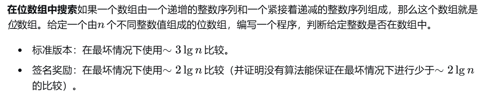
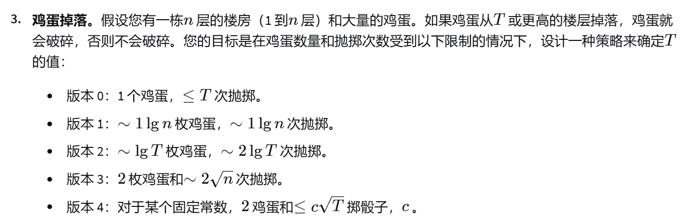

daoshi1593
目录
all teas
crud
//一个删除算法,用于删除所有为arg的元素
void remove(T arg) {
//是步长也是个数
//有一个需要删除,就需要把i+step(i+step不是arg)移到i
int step = 0;
for (int i = 0; i < size; ++i) {
if (SL[i] == arg) {
step++;
} else if (step > 0) {
SL[i - step] = SL[i];
}
}
size -= step;
}
滑动窗口
1456. 定长子串中元音的最大数目
2269. 找到一个数字的 K 美丽值
1984. 学生分数的最小差值
2841. 几乎唯一子数组的最大和
给你一个整数数组 nums 和两个正整数 m 和 k 。
请你返回 nums 中长度为 k 的 几乎唯一 子数组的 最大和 ，如果不存在几乎唯一子数组，请你返回 0 。
如果 nums 的一个子数组有至少 m 个互不相同的元素，我们称它是 几乎唯一 子数组。
子数组指的是一个数组中一段连续 非空 的元素序列。
//滑动,找出长度为k,至少m不同元素的子数组和的最大值
class Solution {
public:
long long maxSum(vector<int>& nums, int m, int k) {
long long ans = 0;
//维护一个hashmap,验证m不同元素
map<long long, long long> te;
//先来一遍,统计频率表
for (int j = 0; j < k; j++) {
te[nums[j]]++;
}
//有效数量
long sizeq = te.size();
long long sum = 0;
//初始数组num
sum = accumulate(nums.begin(), nums.begin() + k, 0LL);
//如果满足题条件,更新,注意如果全不满足,返回0
if (sizeq >= m) {
ans = sum;
}
//开滑
for (int left = 1; left + k - 1 < nums.size(); left++) {
//
int right = left + k - 1;
//如果前驱已经有了,滑动之后数量-1
if (te[nums[left - 1]] == 1) {
sizeq--;
}
//因为滑动离开left-1元素
te[nums[left - 1]]--;
//如果右边元素是新的,++
if (te[nums[left + k - 1]] == 0) {
sizeq++;
}
//统计右边元素
te[nums[left + k - 1]]++;
//这个数组的和
sum = sum + nums[left + k - 1] - nums[left - 1];
//如果此hashmap有大于m元素,更新
/*一个疑问:hashmap里面有此过程
te[A]++;
te[A]--;
此时te[A] == 0
直接统计te.size就会出错(因为映射为0的我们不考虑)
所以要手动更新sizeq
*/
if (sizeq >= m) {
if (sum > ans) {
ans = sum;
continue;
}
}
}
return ans;
}
};
二分
34. 在排序数组中查找元素的第一个和最后一个位置
class Solution {
// lower_bound 返回最小的满足 nums[i] >= target 的 i
// 如果数组为空，或者所有数都 < target，则返回 nums.size()
// 要求 nums 是非递减的，即 nums[i] <= nums[i + 1]
// 闭区间写法
int lower_bound(vector<int> &nums, int target) {
int left = 0, right = (int) nums.size() - 1; // 闭区间 [left, right]
while (left <= right) { // 区间不为空
// 循环不变量：
// nums[left-1] < target
// nums[right+1] >= target
int mid = left + (right - left) / 2;
if (nums[mid] < target) {
left = mid + 1; // 范围缩小到 [mid+1, right]
} else {
right = mid - 1; // 范围缩小到 [left, mid-1]
}
}
return left;
}
// 左闭右开区间写法
int lower_bound2(vector<int> &nums, int target) {
int left = 0, right = nums.size(); // 左闭右开区间 [left, right)
while (left < right) { // 区间不为空
// 循环不变量：
// nums[left-1] < target
// nums[right] >= target
int mid = left + (right - left) / 2;
if (nums[mid] < target) {
left = mid + 1; // 范围缩小到 [mid+1, right)
} else {
right = mid; // 范围缩小到 [left, mid)
}
}
return left; // 返回 left 还是 right 都行，因为循环结束后 left == right
}
// 开区间写法
int lower_bound3(vector<int> &nums, int target) {
int left = -1, right = nums.size(); // 开区间 (left, right)
while (left + 1 < right) { // 区间不为空
// 循环不变量：
// nums[left] < target
// nums[right] >= target
int mid = left + (right - left) / 2;
if (nums[mid] < target) {
left = mid; // 范围缩小到 (mid, right)
} else {
right = mid; // 范围缩小到 (left, mid)
}
// 也可以这样写
// (nums[mid] < target ? left : right) = mid;
}
return right;
}
public:
vector<int> searchRange(vector<int> &nums, int target) {
int start = lower_bound(nums, target); // 使用其中一种写法即可
if (start == nums.size() || nums[start] != target) {
return {-1, -1}; // nums 中没有 target
}
// 如果 start 存在，那么 end 必定存在
int end = lower_bound(nums, target + 1) - 1;
return {start, end};
}
};
coursera teas

#include <vector>
#include <algorithm>
#include <iostream>
std::vector<std::vector<int>> threeSum(std::vector<int>& nums) {
// 使用归并排序对数组进行排序 n(log n)
mergeSort(nums, 0, nums.size() - 1);
std::vector<std::vector<int>> result;
for (int i = 0; i < nums.size() - 2; i++) {
if (i > 0 && nums[i] == nums[i - 1]) {
continue; // 跳过重复元素
}
int left = i + 1;
int right = nums.size() - 1;
while (left < right) {
int sum = nums[i] + nums[left] + nums[right];
if (sum == 0) {
result.push_back({nums[i], nums[left], nums[right]});
while (left < right && nums[left] == nums[left + 1]) {
left++; // 跳过重复元素
}
while (left < right && nums[right] == nums[right - 1]) {
right--; // 跳过重复元素
}
left++;
right--;
} else if (sum < 0) {
left++;
} else {
right--;
}
}
}
return result;
}

// 找到峰值的函数
int findPeak(const vector<int>& arr) {
int left = 0, right = arr.size() - 1;
while (left < right) {
int mid = left + (right - left) / 2;
if (arr[mid] < arr[mid + 1]) {
left = mid + 1;
} else {
right = mid;
}
}
return left;
}
// 二分查找函数
int binarySearch(const vector<int>& arr, int target, int left, int right, bool ascending) {
while (left <= right) {
int mid = left + (right - left) / 2;
if (arr[mid] == target) {
return mid;
}
if (ascending) {
if (arr[mid] < target) {
left = mid + 1;
} else {
right = mid - 1;
}
} else {
if (arr[mid] > target) {
left = mid + 1;
} else {
right = mid - 1;
}
}
}
return -1;
}
// 在位数组中搜索目标值的函数
int searchBitonicArray(const vector<int>& arr, int target) {
int peak = findPeak(arr);
int index = binarySearch(arr, target, 0, peak, true);
if (index != -1) {
return index;
}
return binarySearch(arr, target, peak + 1, arr.size() - 1, false);
}

#include <iostream>
#include <cmath>
// 模拟函数，假设 T = 10
bool eggBreaks(int floor) {
const int T = 10;
return floor >= T;
}
//须知:如果有很多鸡蛋,可以使用二分等
//如果有一个鸡蛋,必遍历
//如果有两个鸡蛋,一个缩小范围,一个遍历范围(已经被缩小的)
// 版本 0：1 个鸡蛋，≤ T 次抛掷
int findTVersion0(int n) {
for (int i = 1; i <= n; ++i) {
if (eggBreaks(i)) {
return i - 1;
}
}
return n;
}
// 版本 1：∼1 lg n 枚鸡蛋，∼1 lg n 次抛掷
int findTVersion1(int n) {
int low = 1, high = n;
while (low <= high) {
int mid = (low + high) / 2;
if (eggBreaks(mid)) {
high = mid - 1;
} else {
low = mid + 1;
}
}
return low - 1;
}
// 版本 2：∼lg T 枚鸡蛋，∼2 lg T 次抛掷
int findTVersion2(int n) {
int k = 1;
while (std::pow(2, k) <= n) {
++k;
}
for (int i = 1; i <= k; ++i) {
if (eggBreaks(std::pow(2, i))) {
for (int j = std::pow(2, i - 1); j < std::pow(2, i); ++j) {
if (eggBreaks(j)) {
return j - 1;
}
}
}
}
return n;
}
// 版本 3：2 枚鸡蛋和 ∼2 * sqrt(n) 次抛掷
int findTVersion3(int n) {
int interval = 1;
while (interval * (interval + 1) / 2 < n) {
interval++;
}
int previousFloor = 0;
int currentFloor = interval;
// 第一个鸡蛋用于找到大致范围
while (currentFloor <= n && !eggBreaks(currentFloor)) {
interval--;
previousFloor = currentFloor;
currentFloor += interval;
}
// 第二个鸡蛋用于精确查找
for (int i = previousFloor + 1; i < currentFloor && i <= n; ++i) {
if (eggBreaks(i)) {
return i - 1;
}
}
return n;
}
// 版本 4：对于某个固定常数，2 鸡蛋和 ≤ c sqrt(T) 掷骰子，c
int findTVersion4(int n) {
int interval = 1;
int currentFloor = interval;
// 第一个鸡蛋用于找到大致范围,sqrt(T)
while (currentFloor <= n && !eggBreaks(currentFloor)) {
interval++;
currentFloor += interval;
}
// 第二个鸡蛋用于精确查找,sqrt(T )
int previousFloor = currentFloor - interval + 1;
for (int i = previousFloor; i < currentFloor && i <= n; ++i) {
if (eggBreaks(i)) {
return i - 1;
}
}
return n;
}